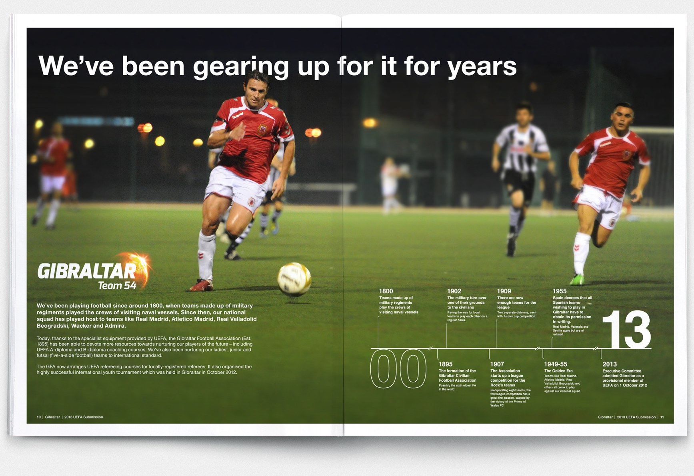

A British Overseas Territory on the Iberian peninsula.
Produce concepts for 2 branding projects; support and promote the Gibraltar Football Association’s bid for membership of UEFA; create a 'nation branding' proposal for all government departments.
Recognising UEFA as 53 member organisation, we adopted a presumptuous campaign approach by labelling Gibraltar as 'Team 54', while simultaneously celebrating the nation's long standing enthusiasm for football, and unique rich cultural heritage, with the aim of legitimising the application.
In a similar vein, we proceed a brand identity that could be applied across all government departments and agencies - including tourism, finance, education and maritime - while simultaneously safeguarding the nation’s brand identity to revive in it a proud sense of statehood, with a unified clear, and contemporary identity.
On 24 May 2013, 51 nations voted ‘Yes’ and Gibraltar was granted UEFA member- ship. Our campaign won multiple awards, including the Grand Prix Overall Winner at the Drum Marketing Awards 2014. The key to success was in creating an easily recognisable brand identity that instantly felt familiar and ‘right’ for Gibraltar. Although now on hold, the value of a long-term plan for gradual updates was identified.